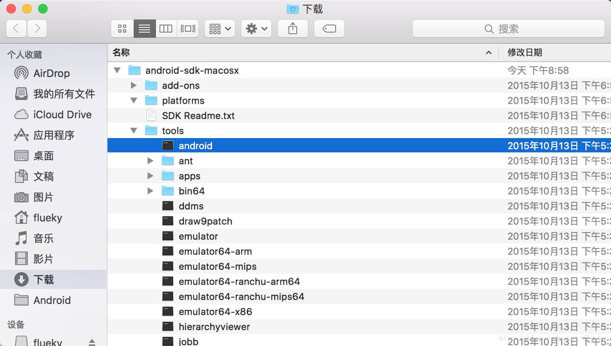
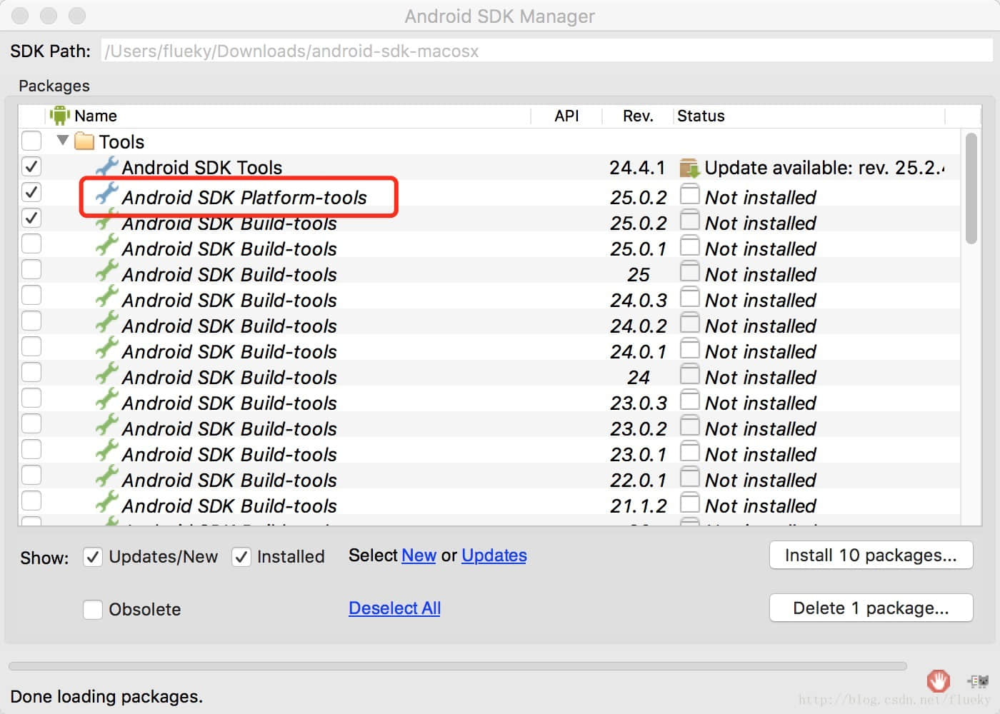
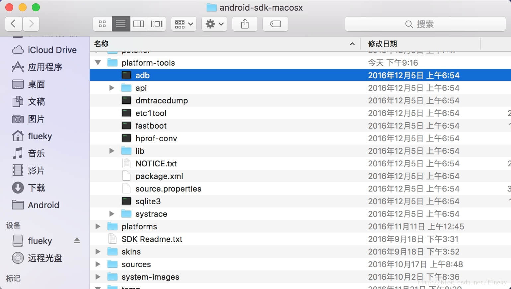
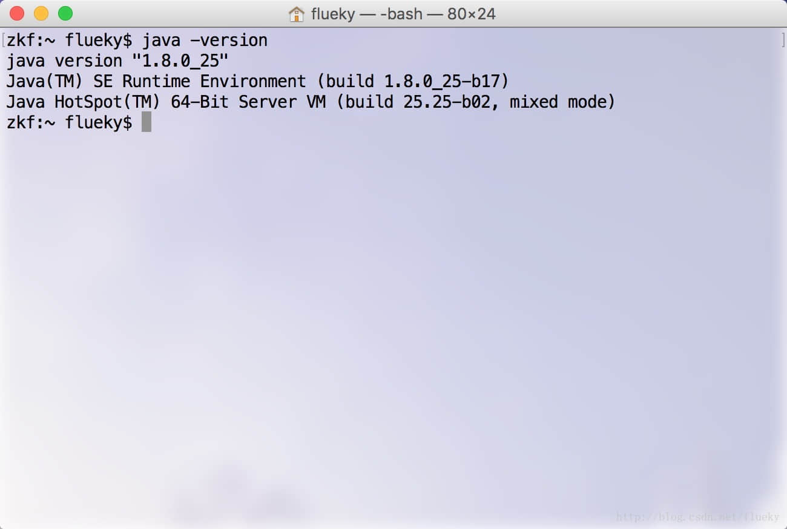

ADB 命令总结
adb 命令全称 Android Debug Bridge。顾名思义，即 Android 开发中调试的桥梁。尽管 AndroidStudio 已经集成了很多功能，以及包括 adb 命令的常用用法，如：安装 apk 文件，查看日志等。但是，掌握下面的常用命令，可以让您在开发过程中起到事半功倍的效果。
1 准备工作
1.1 下载 sdk
如果，没打算在电脑上安装完整的 Android 开发环境，只需下载 SDK Tools 。
附上下载地址：
如果需要安装完整 Android 开发环境，参照 [安装 AndroidStudio ](/blog/2018-08-02)。
如果已经安装完整 Android 开发环境，建议跳过此步骤。
下载完成后，目录结构截图如下：（以Mac版本为例，目录结构差异不大）
通常下载下来的sdk只集成了基础的开发工具，如：模拟器、点9作图工具、ddms。看日志需要的adb工具在platform-tools目录下，可以运行tools目录下的android程序下载。
完整下载后，应该有如下文件：
1.2 配置环境变量
不确定adb运行环境是否需要JRE（Java运行环境）支持，因为每次搭建Android开发需要先安装jdk、下载Android SDK、下载eclipse 或 AndroidStudio，所以未曾验证。只是提醒下，如果adb 使用有问题，可以考虑是否安装JRE。
关于 JRE 的配置，见[Windows 安装 Java 环境](/blog/2018-08-01/)。Mac 系统请忽略。
检查电脑上是否已安装 JDK，可以尝试着运行如下命令，正确显示 jdk 版本号为正常：
1.2.1 Mac 系统
将platform-tools目录添加到系统环境变量中，以方便在终端操作。
以Mac环境为例，修改用户目录下.bash_profile文件。之后使用命令source ~/.bash_profile使修改的配置文件生效。
依旧使用命令adb -version检查配置环境变量是否成功。
1.2.2 Windows 系统
敬请期待
1.3 打开手机开发者模式
[请跳转](/blog/2019-01-24/#3-打开开发者模式)
1.4 命令行神器——Cmder
对一个用习惯 Mac 和 Linux 系统的程序员而言，回归到使用 Windows 系统时，最痛苦的事莫过于使用它！！！
强烈推荐使用 Cmder 。好处请自行体会，下面是配置文档和截图。
2 启动/停止服务
1 | 启动服务 |
在需要重启 adb 服务时使用该指令。在 AndroidStudio 中 debug 或 run 都会自动启动服务并连接设备。
3 查看日志
[adb logcat 用法总结](/blog/2016-12-14/)
4 安装/卸载应用
常见 apk 安装方式有如下几种：
- 通过开发工具执行 run 操作，只适合开发者。
- 将生成的 apk 导出到手机存储，需要连接开发者电脑。
- 将生成的 apk 通过 qq 发送到待安装的设备上。不建议通过微信发送，因为微信的安全机制会自动将 apk 后缀 改成 apk.1 ，无法直接安装。
- 将生成的 apk 发送到蒲公英应用管理平台，通过扫描生成的二维码安装。
但是上述安装方式都无法正确获知安装失败的原因。多数手机都会返回安装包解析失败类似的提示。
定位安装失败的正确知识是：使用命令安装。会告诉你，是签名文件不一致、versionCode 过低导致等。
1 | 导入 apk 到设备并安装 |
5 导入/导出文件
1 | // 将电脑上的文件推到手机 sd 卡上。 |
OV 系列手机在通过 adb 安装 apk 时，会要求输入密码。在不知道密码又不想在测试手机上安装微信、qq时，可以使用 adb push 将 apk 传到 sd 卡上，再在手机的文件管理软件中找到 apk 文件再安装。
6 进入设备终端
1 | 打开设备终端，可以直接通过 linux 命令操作设备 |
7 备份/恢复数据
1 |
|
8 多设备连接
当电脑连接多设备时，所有的 adb 指令都无法正确执行。原因是 adb 不知道需要对哪台设备执行指令。
解决方案：
1 | 显示当前电脑连接的设备，第一列信息是设备序列号 |
更多 adb 命令，会继续完善，敬请期待。
觉得有用？那打赏一个呗。[去打赏](/donate/)
 wechat
wechat alipay
alipay